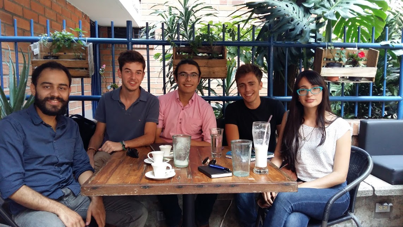

Colombie : hiver sous les tropiques
Bonjour à tous !
A la veille de notre arrivée en Équateur et dix jours après notre arrivée dans le premier pays d’Amérique du Sud de notre traversée, nous souhaitions vous faire un petit compte rendu de notre périple ici, en Colombie !
Bienvenidos a Bogotá… !
Nous avons donc atterri le 5 janvier dernier à l’aéroport de Bogotá, capitale haut perchée du pays (elle s’étend à 2640 mètres d’altitude) et premier centre démographique de la Colombie, avec près de sept millions d’habitants sur son territoire. Pour être franc notre première impression de la capitale colombienne est plutôt mitigée. Ceci est probablement dû à notre arrivée de nuit mais des portes ferrées barrent l’entrée de tous les petits commerces, les rues semblent vides dès dix heures du soir et l’absence notable d’éclairage public ne donnent pas un fort sentiment de sécurité… Mais le matin venu, la ville s’anime d’un coup ! Rassurés par ce réveil, nous profitons de notre journée sur place pour observer Bogotá de haut. Nous montons en funiculaire au Cerro de Monserrate, lieu de pèlerinage de la population locale offrant un panorama impressionnant sur la ville.
A 3150m, au sommet du Cerro, on dispose d'une très belle vue sur la ville malgré le brouillard
La montée en funiculaire est impressionante!
Nous flânons quelques heures dans le centre historique, découvrons la Plaza de Bolívar (du nom de Simon Bolívar, le plus célèbres des indépendantistes sud-américains, qui semble baptiser la moitié des rues, places et bâtiments publics du pays…) et faisons un tour au musée de l’or. Ce dernier expose de nombreuses pièces artisanales provenant de civilisations précolombiennes et tente de rendre compte du mythe de l’El Dorado, central dans l’histoire des conquêtes espagnoles.
Antoine, collection printemps/été 2016, devant l'une des nombreuses peintures murales qui égayent la ville
Grégoire, collection automne/hiver
Décalage horaire oblige, nous nous couchons tôt et, le lendemain matin, après que je me suis enfin décidé à me faire couper les cheveux à la peluquería du coin, nous partons en avion pour la côte caraïbe du pays et sa ville emblématique : Carthagène.
Carthagène : Conquêtes espagnoles, piraterie et tourisme
Désignée partout comme « la perle des caraïbes », la vieille ville de Carthagène ne nous déçoit pas. Les arbres poussent dans de petites rues aux façades coloniales, et le petit centre historique s’isole du reste de la ville (immense !) par un mur d’enceinte intact, conçu autrefois pour la protéger des multiples attaques de pirates et de corsaires qui la menacèrent des dizaines de fois au XVIIème siècle, âge d’or de la piraterie caribéenne. Fondée par les espagnols en 1533, la ville a connu depuis un essor considérable grâce au tourisme qu’elle draine dans toute la région. En dehors des enceintes de la ville qui délimitent ses petites rues calmes et ses places bruyantes, d’immenses barres d’immeubles bordent la plage de Bocagrande, qui descend sur quelques kilomètres vers le Sud. L’effet donné est assez étrange car la surface recouverte par ces bâtiments est bien supérieure au petit périmètre inscrit au patrimoine mondial de l’Unesco, qui est pourtant la raison de leur présence !
Le port de Carthagène sur la mer des Caraïbes
Le capitaine Pochet accompagné de son fidèle Monsieur Mouche, scrute l'horizon depuis les remparts de la cité
La plage de Bocagrande, à quelques kilomètres de la cité, où se retrouvent tous les vacanciers colombiens
Nous profitons de notre présence sur la côte caraïbe pour aller nous baigner dans las Islas de Rosario avoisinantes où les plages sont très belles… mais bondées ! Heureusement, les eaux tropicales sont plus calmes et nous permettent d’observer une faune sous-marine riche et colorée avant de rentrer préparer nos affaires. Car après ce petit détour vers le Nord, il nous faut nous remettre en route vers le Sud et notre objectif final !
L'eau et les paysages des Islas del Rosario sont superbes
On peut apercevoir tout plein de poissons tropicaux dans ces eaux
Rencontre a Medellín
Nous quittons Carthagène et nous nous dirigeons donc vers une ville tristement célèbre, Medellín. Dans les années 80, celle-ci faisait en effet partie des villes les plus violentes au monde, et ce à cause des activités de Pablo Escobar et de son cartel qui y tenaient leur pré carré. Depuis la mort du parrain, la ville a connu une pente très positive et nous la découvrons sous un jour enthousiasmant ! Les transports y sont modernes, le sentiment d’insécurité absent et les gens bien plus détendus qu’à Bogotà ! De plus, la situation géographique de la ville (celle-ci s’étale sur les deux flancs opposés d’une large vallée) lui donne un aspect bien singulier. On voit les immeubles grimper le long des falaises sans vouloir s’arrêter ! Certains de ces quartiers sont placés tellement en hauteur que le seul moyen de transport en commun les desservant est un téléphérique que nous empruntons.
Medellín, une ville immense au milieu des montagnes
Antoine dans le téléphérique, mais ce n'est pas pour aller au ski!
Le téléphérique est relié au métro et fait partie intégrante du système de transport local
Grâce à notre ami Nicolas qui nous avait chaleureusement accueilli à San Francisco, nous sommes mis en relation avec une équipe de chercheurs travaillant sur l’impact de la déforestation sur les ressources en eau des régions andines du pays, où la population est concentrée. Laura, Felipe et Julian nous convient dans un café avoisinant leur université et nous pouvons ainsi échanger avec eux sur la question ! Nous vous décrirons en détail cette interview dans notre prochain article sur l’eau.

Rencontre avec Julian, Felipe et Laura à Medellín
Avant de faire nos adieux à la Colombie nous faisons une dernière escale à Popayán, ville coloniale du Sud du pays. Après notre découverte des villes colombiennes au style colonial hérité des conquêtes espagnoles, nous nous dirigeons vers l'Equateur où un programme un peu plus nature nous attend ! On ne vous en dit pas plus mais cela promet d'être... explosif ! ;)
La ville coloniale de Popayán, surnommée "la ciudad blanca"
Et bien sûr avant de nous quitter on vous laisse sur le traditionnel jeu concours! De Carthagène à Quito, nous avons utilisé les bus locaux pour nous déplacer... a votre avis combien de temps avons nous passé dans les bus pour traverser tout le pays?
Envoyez votre estimation à contact@aquamerica.fr et le gagnant aura droit à une dédicace sur notre page Facebook! Alors, qui sera notre premier gagnant de 2016??
Combien de temps de trajet en bus séparent Carthagène de Quito??
Merci pour votre lecture et à très bientôt !!
Antoine